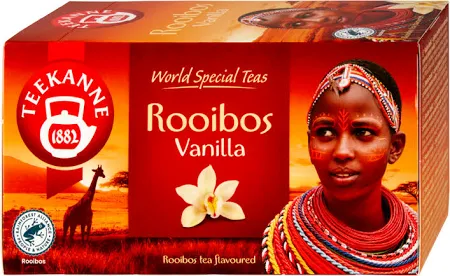
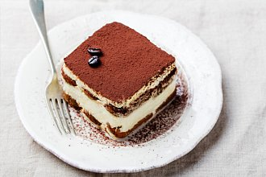
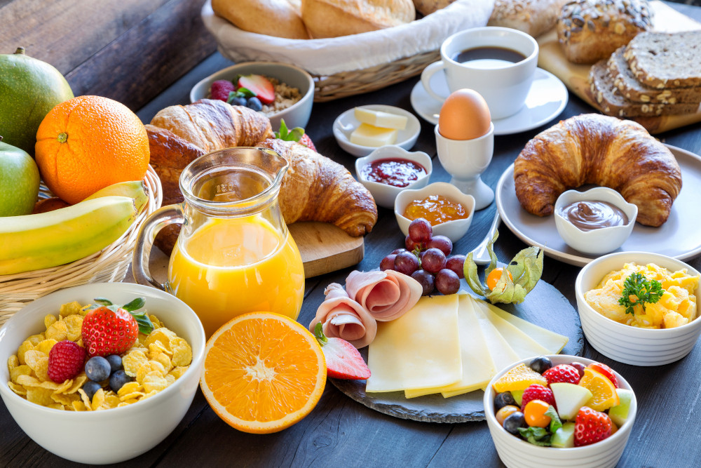
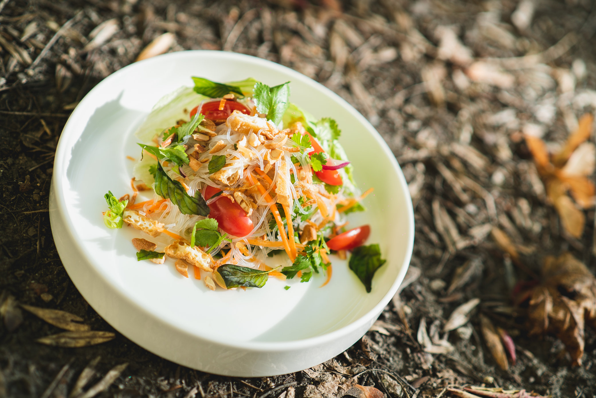

☕ Káva
- Espresso – 45 Kč
Silná a intenzivní chuť, ideální na probuzení - Cappuccino – 60 Kč
Espresso s jemně napěněným mlékem - Latte – 65 Kč
Hřejivé a jemné, ideální ke knize - Ledová káva – 70 Kč
S vanilkovou zmrzlinou
🫖 Čaje
- Černý čaj Earl Grey – 50 Kč
- Zelený jasmínový – 55 Kč
- Bylinná směs (máta, meduňka) – 50 Kč
- Zázvorový s medem a citronem – 60 Kč
🍰 Dezerty
- Čokoládový dort – 80 Kč
Bohatá čokoládová chuť s ganache polevou - Cheesecake – 75 Kč
Klasický nebo s lesním ovocem - Mrkvový dort – 70 Kč
Šťavnatý s ořechy a krémem - Makronky (3 ks) – 60 Kč
🥐 Snídaně
- Máslový croissant – 35 Kč
- Jogurt s granolou a ovocem – 65 Kč
- Toast s avokádem – 75 Kč
- Vaječná míchanice s pečivem – 70 Kč
🌱 Veganské
- Veganský cheesecake – 75 Kč
- Sójové cappuccino – 60 Kč
- Raw kuličky (3 ks) – 50 Kč
- Ovesné latte – 65 Kč